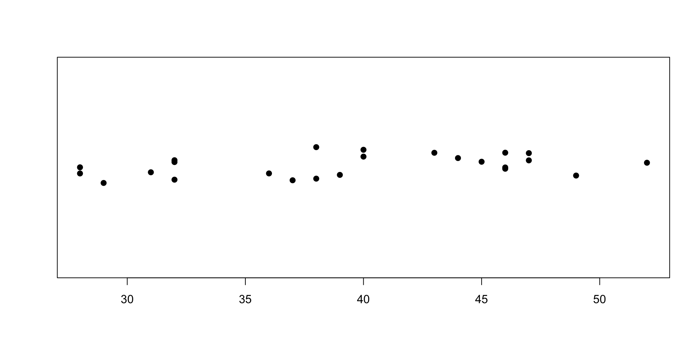
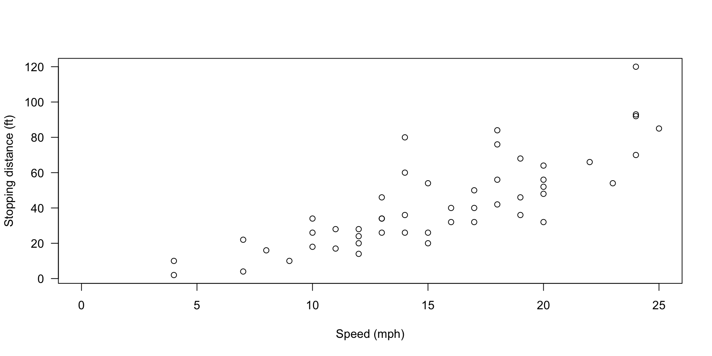
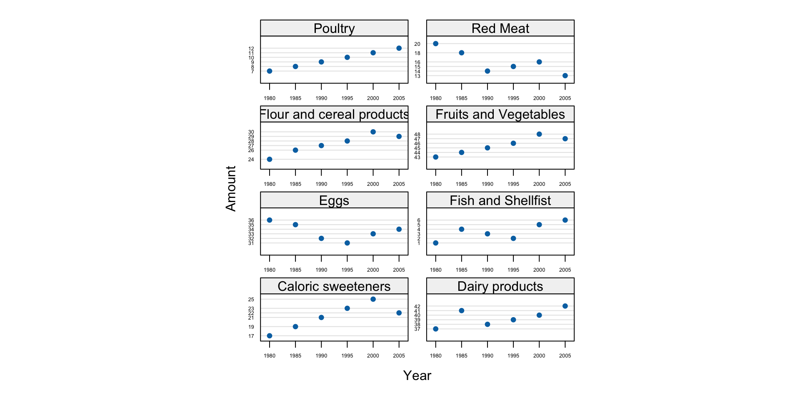

[1] 6[1] 7[1] 9Chapter 3: A Short R Tutorial
Shih Chien University
2026-06-07
This chapter is a hands-on tour of R, packed with examples. The best way to learn is to start R and type along:
3 + 4, try 3 - 4);By the end you will have touched every major idea in the course: vectors, functions, variables, data structures, classes, models, charts, and the help system.
Type an expression at the console, press Enter, and R evaluates it and prints the result (if there is one). Simple math works exactly as expected, including operator precedence and parentheses:
The interactive interpreter automatically prints whatever object an expression returns — that is why you see the answers without asking for them.
[1]: Everything Is a VectorWhy does every answer start with [1]? Because any number you type is a vector — an ordered collection of numbers. The bracketed number is the index of the first element shown on that row. Each result above is a vector with a single element, hence [1].
Longer vectors are built with the c(...) function (c for combine):
The sequence operator : produces consecutive integers — handy for seeing how row labels work when output wraps:
[1] 1 2 3 4 5 6 7 8 9 10 11 12 13 14 15 16 17 18 19 20 21 22 23 24 25
[26] 26 27 28 29 30 31 32 33 34 35 36 37 38 39 40 41 42 43 44 45 46 47 48 49 50Each row begins with the index of its first element (e.g., [23], [45]), so you can locate any element at a glance.
Operations on two vectors are matched element by element, returning a new vector:
[1] 11 22 33 44[1] 10 40 90 160[1] 0 1 2 3This is the single most characteristic habit of R: you rarely loop over elements — you operate on whole vectors at once.
When the vectors differ in length, R recycles the shorter one, repeating it as many times as needed:
[1] 2 3 4 5[1] 1.0000000 0.5000000 0.3333333 0.2500000 0.2000000[1] 11 102 13 104Warning in c(1, 2, 3, 4, 5) + c(10, 100): longer object length is not a
multiple of shorter object length[1] 11 102 13 104 15Warning
Watch the warning. If the longer length is not a multiple of the shorter, R still computes an answer but warns you — usually a sign of a mistake in your code.
Expressions can involve text too:
[1] "Hello world."[1] "Hello world" "Hello R interpreter"In R, the operations that do the work are functions — just like math class. Most calls take the form f(argument1, argument2, ...):
Each of these takes a single argument. Many functions take several.
Arguments can be supplied by name, or by position when given in the default order:
Both calls are identical. Named arguments shine when a function has many parameters and you want to set only a few.
Not every function looks like f(...). Some appear as operators:
+ is ordinary addition; ^ is exponentiation (note: not commutative); == tests equality and returns a Boolean (TRUE/FALSE) — yes, R has a logical data type.x <- 1, Read “x gets 1”R lets you attach names to values. The assignment operator is <-, pronounced “gets” — pleasingly close to algorithm pseudocode:
The value is substituted when the assignment is made, not when the variable is later evaluated. Change y after building z, and z is unmoved:
The subtleties of how variables are evaluated (environments, lazy evaluation) wait until Chapter 8.
R offers several ways to refer to members of a vector:
[1] 7[1] 1 2 3 4 5 6[1] 1 6 11[1] 8 4 9The index vector can be any integer vector — contiguous, scattered, even shuffled.
You can also select elements with a vector of TRUE/FALSE values. Example: keep only multiples of 3, i.e., elements congruent to 0 (mod 3):
[1] FALSE FALSE TRUE FALSE FALSE TRUE FALSE FALSE TRUE FALSE FALSE TRUE[1] 3 6 9 12This filter by condition idiom is the workhorse of data analysis in R — you will use it constantly.
= also assigns, left to right, like most languages. Use it if you prefer — but the book (and these slides) stick with <- for readability. Never confuse = (assign) with == (test equality):[1] 2[1] FALSE-> assigns to the right — occasionally handy when you typed a long expression and only then remembered to save it:Warning
Inside a function call, f(x <- 3) assigns x in your workspace and then passes the value — almost never what you intend. Use = to bind arguments: f(x = 3).
A function is just another object bound to a symbol. Define your own and call it like a built-in:
A useful trick follows: typing the name alone (no parentheses) prints the function’s source code:
This works on most built-in functions too — R is open source all the way down.
An array is a multidimensional vector. Internally, vectors and arrays are stored identically — an array is simply a vector wearing a dimension attribute — but arrays display and index differently:
[,1] [,2] [,3] [,4]
[1,] 1 4 7 10
[2,] 2 5 8 11
[3,] 3 6 9 12[1] 5Compare the same contents as a plain vector:
A matrix is just a two-dimensional array:
[,1] [,2] [,3] [,4]
[1,] 1 4 7 10
[2,] 2 5 8 11
[3,] 3 6 9 12Arrays may have more than two dimensions:
(Printed in full, w appears as two 3×3 slices labeled , , 1 and , , 2.)
R’s indexing syntax for parts of an array is clean: one index per dimension, separated by commas — and omitting an index selects everything in that dimension:
[1] 4 [,1] [,2]
[1,] 1 4
[2,] 2 5[1] 1 4 7 10[1] 1 2 3 [,1] [,2] [,3] [,4]
[1,] 1 4 7 10
[2,] 2 5 8 11 [,1] [,2] [,3] [,4]
[1,] 1 4 7 10
[2,] 3 6 9 12Everything so far held a single data type. Lists hold a heterogeneous collection of objects, with optionally named components — subtly different from “lists” in other languages:
Items are accessible by name or by position — note the three distinct forms:
A list can even contain other lists:
[[1]]
[1] "this list references another list"
[[2]]
[[2]]$thing
[1] "hat"
[[2]]$size
[1] "8.25"This nesting ability is what lets R represent arbitrarily complex objects — fitted models, for instance, are big nested lists.
A data frame is a list of named vectors, all the same length — think spreadsheet or database table. It is the natural container for experimental data. The book’s example: 2008 win/loss records of the National League East:
Columns are reached with the $ operator (just like list components):
To find a specific value — say, losses by the Florida Marlins — build a logical vector and use it as a filter:
Chapter 11 shows how to import data frames from files and databases; beyond lists, R also offers formal class definitions via S4 objects for heterogeneous data.
R is an object-oriented language: every object has a type and belongs to a class. We have met several classes already — query them with class():
[1] "character"[1] "numeric"[1] "data.frame"[1] "function"Note the last line: a function is an object of class function.
Example: + is generic. It adds numbers, but also knows what to do with a date and a number:
print CallWhen you evaluate an expression at the console, the interpreter silently calls the generic function print on the result:
print method for it, and you control how its objects display.print is what plots them. Call a lattice function inside another function or script and nothing appears unless you print it explicitly — a classic gotcha.Objects return in depth in Chapter 7; classes in Chapter 10.
To statisticians, a model concisely describes a set of data, usually via a mathematical formula. Two typical goals:
For a linear model predicting \(y\) from \(x_1, x_2, \ldots, x_n\) (the dependent and independent variables):
\[y = c_0 + c_1 x_1 + c_2 x_2 + \cdots + c_n x_n + \varepsilon\]
R expresses the relationship as y ~ x1 + x2 + ... + xn — a formula object.
lmThe cars data set (in the base distribution, collected in the 1920s) records car speeds and stopping distances. Assume stopping distance is a linear function of speed; the formula is dist ~ speed, and lm estimates the parameters:
Call:
lm(formula = dist ~ speed, data = cars)
Coefficients:
(Intercept) speed
-17.579 3.932 Printing an lm object shows the original call (so you can see data and formula) and the estimated coefficients.
summary
Call:
lm(formula = dist ~ speed, data = cars)
Residuals:
Min 1Q Median 3Q Max
-29.069 -9.525 -2.272 9.215 43.201
Coefficients:
Estimate Std. Error t value Pr(>|t|)
(Intercept) -17.5791 6.7584 -2.601 0.0123 *
speed 3.9324 0.4155 9.464 1.49e-12 ***
---
Signif. codes: 0 '***' 0.001 '**' 0.01 '*' 0.05 '.' 0.1 ' ' 1
Residual standard error: 15.38 on 48 degrees of freedom
Multiple R-squared: 0.6511, Adjusted R-squared: 0.6438
F-statistic: 89.57 on 1 and 48 DF, p-value: 1.49e-12The summary reports the call, the residual distribution, the coefficient table (estimates, standard errors, \(t\)-values, \(p\)-values), and fit statistics (\(R^2\), \(F\)-statistic).
You may also fit-and-inspect in one breath, without saving the model:
Convenient — but naming the model is usually wiser:
R ships several visualization systems: graphics (the classic base system), grid, and lattice — with graphics and lattice the most used in the book’s era (and ggplot2, Chapter 15, dominating today).
To make this concrete, the book uses real data: every field goal attempted in the NFL in 2005. (A field goal: kicking the ball between the goalposts for 3 points; a miss hands possession to the other team at the spot of the kick.)
The book loads data with library(nutshell); that package has left CRAN, so this course fetches the same data sets from the CRAN GitHub mirror:
[1] "home.team" "week" "qtr" "away.team" "offense"
[6] "defense" "play.type" "player" "yards" "stadium.type"names() lists the columns: home and away team, week, quarter, offense, defense, play type, yards, stadium type, player.
The hist function shows a distribution in one line:
(Your colors may differ from the book’s — the author tweaked graphical parameters for print.)
breaksWanting more detail at different distances, increase the number of bins via the breaks argument:
A single argument transforms the picture — typical of base graphics: sensible defaults, endless knobs.
How many kicks were blocked? The table function tabulates a categorical variable:
A strip chart plots one point per observation along an axis. Select only blocked kicks, jitter the points so they don’t overprint, and restyle them with pch:

cars Data AgainThe cars data set has 50 observations of speed and stopping distance:
[1] 50 2[1] "speed" "dist" speed dist
Min. : 4.0 Min. : 2.00
1st Qu.:12.0 1st Qu.: 26.00
Median :15.0 Median : 36.00
Mean :15.4 Mean : 42.98
3rd Qu.:19.0 3rd Qu.: 56.00
Max. :25.0 Max. :120.00 Plot the relationship, with labeled axes:

At a glance: stopping distance grows roughly in proportion to speed.
Lattice excels at comparing groups. It is not loaded by default — calling a lattice function first requires:
The example data: American food consumption, 1980–2005, in the consumption data set (48 observations: Amount consumed, Food type, Year, in 5-year steps).
Two columns are numeric (Amount, Year); two are a new type: factors — R’s compact representation of categorical values, created with factor() and central to modeling functions.
We want Amount against Year, drawn separately for each Food — lattice expresses this with the formula Amount ~ Year | Food:
The book’s author found the defaults hard to read (labels too big, shared scales, awkward stacking) and tuned two options:

aspect adjusts panel aspect ratios so changes bank toward 45° (easiest to perceive);scales controls axis drawing — "sliced" gives each panel its own slice of the range.Chapter 14 treats lattice in full.
R documents every function in every installed package:
Can’t remember the function’s name? Search by topic:
For a whole package’s documentation, the help option of library is more complete than a single page:
Some packages — especially from Bioconductor — include vignettes: short documents that walk through using the package, examples included.
Tip
Habit to build now: when a function surprises you, read ?fun before searching the web — R’s built-in documentation is unusually good, and the examples actually run.
Copyright. These slides are adapted from R in a Nutshell: A Desktop Quick Reference (2nd ed.) by Joseph Adler, O’Reilly Media. All rights reserved by the original author and publisher.
Non-commercial use only. These materials are strictly for educational purposes and may not be used for commercial gain.
Attribution. Any reproduction, distribution, or use of these materials must properly credit the original source.

R in a Nutshell: A Desktop Quick Reference


Comments
Anything after a pound sign (
#) on a line is ignored — even mid-expression:Comment generously: your future self is the most frequent reader of your code.